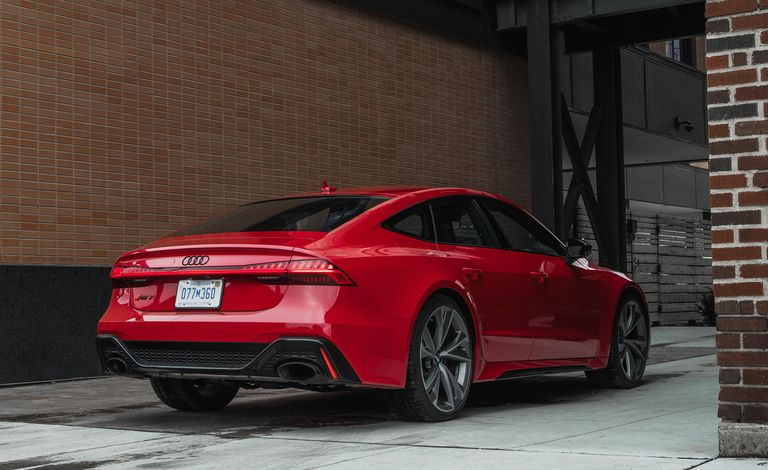
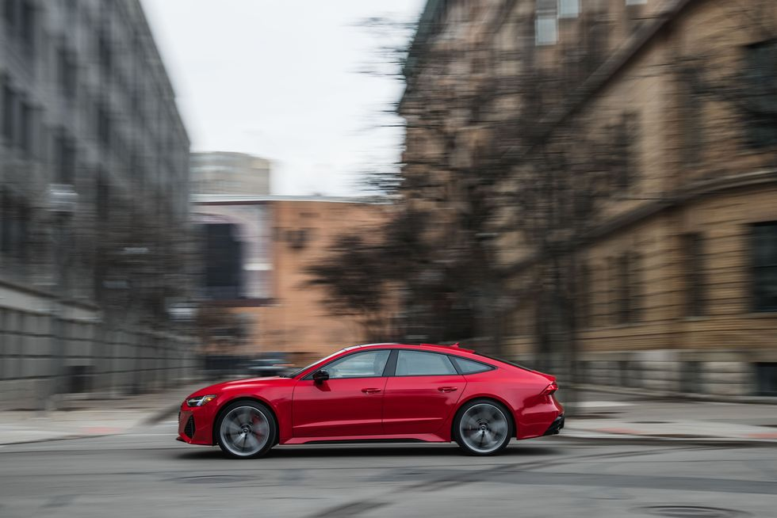
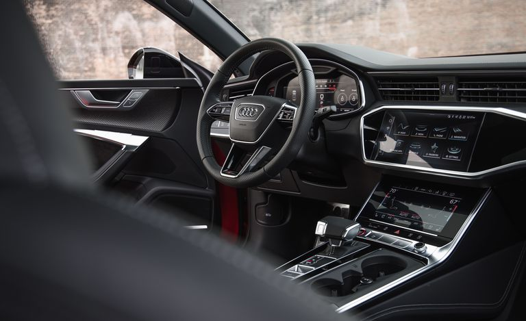
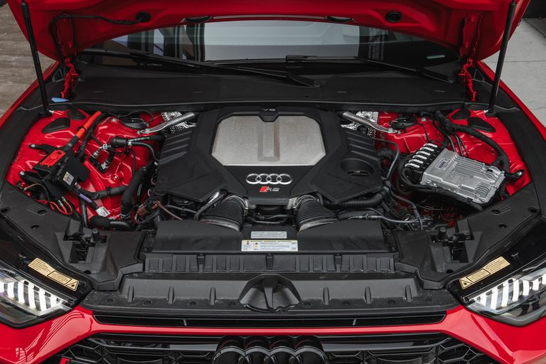

The 2022 Audi RS7 is a super-high-performance hatchback that's as audacious as it is luxurious. Puzzled how something so sexy and powerful shares a body style with something as dorky and feeble as a Chevy Spark? Well, as with the A7 and S7 variants that the RS7 is based on, Audi bookends these sleek four-doors with a hatch for added practicality. However, the RS6 Avant wagon is cheaper and roomier. Still, with haunches this broad and a twin-turbo V-8 boasting 591 horsepower, getting noticed and going fast are the RS7's primary objectives. While its explosive thrust causes passengers to involuntarily cuss, and its sharp handling inspires the driver to smile, the hottest of hatches never feels unruly or raw. Instead, its interior exudes expensiveness, pampering riders with rich trappings and ritzy features. As a result, the premium-priced 2022 RS7 is a rapid expression of both driving enthusiasm and wealth.
Power comes from a twin-turbo 4.0-liter V-8 that pairs with a 48-volt hybrid system, eight-speed automatic transmission, and Quattro all-wheel drive. All this tech makes the RS7 heavier than the last generation model, which made as much as 605 horsepower. Still, with 591 horses and 590 pound-feet of torque, the RS7 we tested rocketed to 60 mph in just 3.0 seconds. Want a slightly stronger dose of "holy s**t" acceleration? Try the 617-hp BMW M5 Competition or 603-hp Mercedes-AMC E63 S sedan; both reach 60 mph in 2.9 ticks. The RS7 rides on an air suspension with adaptive settings for varying levels of stiffness. However, it felt refined regardless of the drive mode, and even rolling on our tester's 22-inch rims (21s are standard). It's also rewarding to bend into corners thanks to the poised chassis and the added agility of its standard rear-wheel-steering system. Crazy quick and unerringly comfortable are accurate descriptors of its driving personality. Despite not opting for the carbon-ceramic brakes, which allow its top speed to be increased from 155 to 190 mph, the standard stoppers hauled our nearly 5000-pound four-door down from 70 mph in an impressive 151 feet.
While the RS model shares an interior design and passenger space with the regular A7, it also has some exclusive details and intriguing options. Of course, the sturdy build quality and upscale materials are immediately recognizable. Still, the RS7's cabin is adorned with trim-specific logos and other unique accents. The standard front sport seats have nice leather upholstery but can be reskinned with upgraded leather and ventilated cushions. Its back seat can fit two or three people, depending on the chosen seat configuration, and its cargo area offers 19 cubic feet of space with the rear seats in use and 49 cubic feet with the rear seats folded.
The powerful, albeit thirsty, RS7 is expected to earn 15 mpg in the city and 22 mpg on the highway. We ran it on our 75-mph highway fuel-economy route, which is part of our extensive testing regimen, and it returned 23 mpg in the real world. For more information about the RS7's fuel economy, visit the EPA's website. Audi is bringing back the RS7, its high-performance A7 variant, and has finally made it known what the slinky, luxurious performance hatchback will cost. The 2021 RS7 will land in dealerships this fall with a $114,995 asking price.
